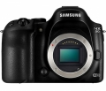
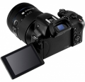

器材库 > APS及其以下画幅可换镜头数码相机 > NX30

规格总览
产品类型
APS画幅可换镜头数码相机
发布日期
2014-01-03
影像规格
影像传感器
CMOS
影像传感器尺寸
23.5 x 15.7mm
总像素
2160万
有效像素
2030万
影像处理器
DRIMe IV图像处理器
色彩滤镜
RGB 原色滤镜
色彩空间
sRGB / Adobe RGB
静态图像尺寸
JPEG(3:2）：5472 x 3648, 3888 x 2592, 2976 x 1984, 1728 x 1152, 2736 x 1824, JPEG(16:9)：5472 x 3080, 3712 x 2088, 2944 x 1656, 1920 x 1080, JPEG(1:1)：3648 x 3648, 2640 x 2640, 2000 x 2000, 1024 x 1024, RAW:5472 x 3648
静态图像格式
JPEG, RAW
静态图像质量
超高画质，高画质，标准画质
画幅比
3:2, 16:9, 1:1
短片尺寸
1920 x 1080, 1920 x 810, 1280 x 720 , 640 x 480, 320 x 240(可分享)
短片格式
MPEG4-AVC/H.264
除尘系统
超声波驱动
镜头和对焦
镜头卡口
Samsung NX
对焦系统类型
混合式自动对焦(相位检测式 & 反差式)
对焦点
自动对焦点总数:105 点(相位检测自动对焦), 247 点(反差式自动对焦)；对焦点:单点对焦:可选择任意区域；多点对焦:一般 21 (3 x 7)点,近距 35 点；面部检测:最多 10 人
对焦模式
单一自动对焦、连续自动对焦、手动对焦、触控式自动对焦 & 快门自动对焦
AF辅助灯
有
手动对焦
支持
曝光控制
测光系统
TTL 221(17 x 13)区域
测光模式
中央重点测光, 点测光, 平均测光
拍摄模式
智能场景识别、程序、光圈优先、快门优先)、手动、自定义 1 、自定义 2 ，镜头优先、智能、Wi-Fi
快门类型
电子控制垂直焦平面快门
快门速度
自动:1/8000 秒 ~ 1/4 秒 (支持EFS)；手动:1/8000 秒 ~ 30 秒(1/3EV 调节) (支持EFS)；B 门:最长 4 分钟
曝光补偿
±3EV以1/3EV级调整
自动曝光锁
有
自动包围曝光
±3EV 调节
ISO感光度
自动、100、200、400、800、1600、3200、6400、12800、25600(1EV 或 1/3EV 调节)
白平衡
日光, 白炽灯, 闪光灯, 阴天, 自定义, 自动, 手动, 荧光灯(W、N、D)
自拍
2~30秒
连拍
JPEG: 高清(9 fps) , 普通( 4 fps) , 高速连拍 : 10, 15, 30 fps , RAW : 高清( 9 fps), 普通( 4 fps)
闪光灯
内置闪光灯
弹出式
闪光模式
自动, 强制闪光, 关闭, 智能自动, 自动+红眼减轻
闪光指数
11 (ISO 100)
闪光补偿
±2EV以1/2EV级调整
外接闪光灯
三星外接闪光灯
取景器/显示屏
取景器
折叠式电子取景器 w/眼睛接触式传感器
取景范围
100%
取景放大倍率
约 0.96倍
屈光度调节范围
约 -4.0 ~ +1.0m-1
LCD类型
AMOLED
LCD尺寸
3.0英寸
视野率
约 100%
LCD特性
触摸屏, 翻转屏
文件输入/输出
存储卡
SD/SDHC, SDXC
数据接口
USB2.0
视频/音频接口
HDMI 输出, Video 输出 (NTSC/PAL)
无线功能
Wi-Fi, NFC
电源
电池
可充电池:BP1410(1410mAh, 7.6V)
续航能力
180 分钟/360 张(CIPA 标准)
外接电源
DC 5.0V, 1A,，通过迷你 USB 接口
机身规格
颜色
黑色
尺寸
127 x 95.5 x 41.7mm
重量
375g
其它
配件端口
热靴
工作温度
0-40℃
工作湿度
5-85%
软件
Adobe Photoshop Lightroom 5，iLauncher
该产品暂无存档的网友点评
产品图 / 样片
NX30

NX30
评测 / 相关文章
- 详细内容 （存档）
- 专业与智能的结合 三星NX30无反相机评测 （存档）
- ［试用］记录烂漫樱花时节 三星NX30试用体验 （存档）
- ［试用］专业与智能的完美结合 三星NX30实拍 （存档）
- ［资讯］专业与轻巧的碰撞 三星NX30无反相机图赏 （存档）
- ［资讯］NX30亮相巴厘岛三星论坛 （存档）
- ［资讯］三星NX30真机图赏 （原站已下线）
- ［资讯］三星发布NX30相机及首款S系列尊享级镜头 （存档）
相关文章
- ［试用］记录烂漫樱花时节 三星NX30试用体验 （存档）
- ［试用］专业与智能的完美结合 三星NX30实拍 （存档）
- ［试用］专业与智能的结合 三星NX30无反相机评测 （存档）
- ［资讯］专业与轻巧的碰撞 三星NX30无反相机图赏 （存档）
- ［资讯］NX30亮相巴厘岛三星论坛 （存档）
- ［资讯］三星NX30真机图赏 （原站已下线）
- ［资讯］三星NX30 （存档）
- ［资讯］三星发布NX30相机及首款S系列尊享级镜头 （存档）